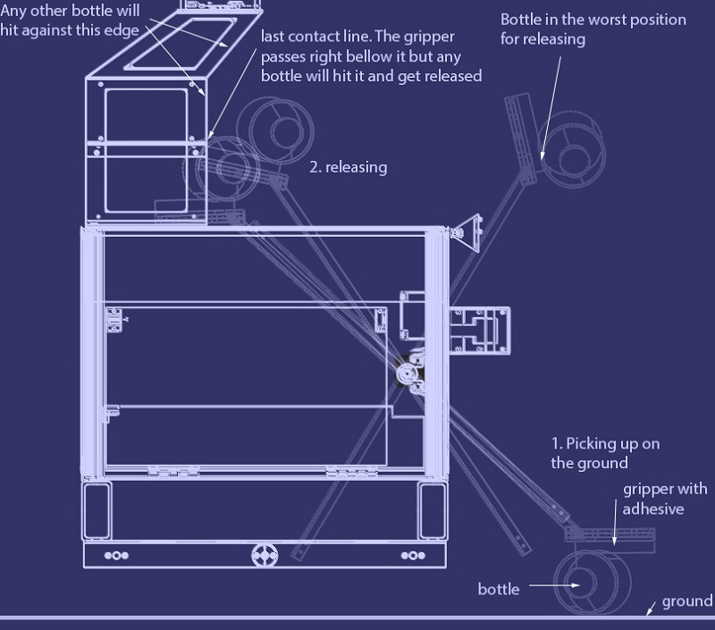
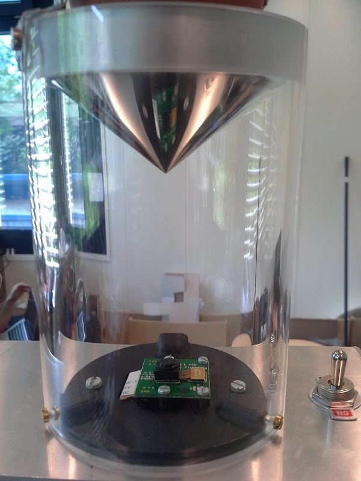

Indigo Beam
What the project is about
The goal of the EPFL robot competition is to plan, build and control an autonomous robot in a semistructured environment. This exciting project was tackled with a lot of enthusiasm. The robot features a robust adhesive arm that collects bottles regardless of their position. The 6 wheel-drive allows the robot to easily move in every terrain. A two-camera system is used for the robot localization and to find the bottles. Image processing techniques are used to extract LED strips and reflections on bottles from the camera images. Infrared sensors are used for obstacle avoidance. An extended Kalman filter is used to combine two sources of localization into accurate robot positioning. The whole mechanical structure was built well in advance, consisting of a modular aluminum frame with fixation points for every sensor and electronic board. This report goes through the first design steps of functional analysis and brainstorming needed to come up with an interesting solution and continues through the implementation of the chosen concept with a detailed analysis of the subsystems. The final robot is then evaluated in the target environment and possible improvements are discussed.
Highlights video
Selected Media


A. The sail in flying configuration, showing a 6 degree angle to the horizontal. B. The sail is moved to an upright position, for the sailing configuration.